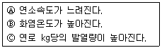
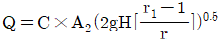

가스산업기사 (2018-03-04 기출문제)
1과목: 연소공학
1. 메탄의 완전연소 반응식을 옳게 나타낸 것은?
- CH4+2O2→CO2+2H2O
- CH4+3O2→2CO2+2H2O
- CH4+3O2→2CO2+3H2O
- CH4+5O2→3CO2+4H2O
(정답률: 83%)

2. 최소발화에너지(MIE)에 영향을 주는 요인 중 MIE의 변화를 가장 작게 하는 것은?
- 가연성 혼합 기체의 압력
- 가연성 물질 중 산소의 농도
- 공기 중에서 가연성 물질의 농도
- 양론 농도하에서 가연성 기체의 분자량
(정답률: 76%)
3. 에탄의 공기 중 폭발범위가 3.0~12.4% 라고 할 때 에탄의 위험도는?
- 0.76
- 1.95
- 3.13
- 4.25
(정답률: 88%)
4. 액체연료의 연소형태 중 램프등과 같이 연료를 심지에 빨아올려 심지의 표면에서 연소시키는 것은?
- 액면연소
- 증발연소
- 분무연소
- 등심연소
(정답률: 89%)
5. 가스의 특성에 대한 설명 중 가장 옳은 내용은?
- 염소는 공기보다 무거우며 무색이다.
- 질소는 스스로 연소하지 않는 조연성이다.
- 산화에틸렌은 분해폭발을 일으킬 위험이 있다.
- 일산화탄소는 공기 중에서 연소하지 않는다.
(정답률: 78%)
6. 메탄 50v%, 에탄 25v%, 프로판 25v%가 섞여있는 혼합 기체의 공기 중에서의 연소하한계(v%)는 얼마인가? (단, 메탄, 에탄, 프로판의 연소하한계는 각각 5v%, 3v%, 2.1v% 이다.)
- 2.3
- 3.3
- 4.3
- 5.3
(정답률: 83%)
7. 연료가 구비하여야 할 조건으로 틀린 것은?
- 발열량이 클 것
- 구입하기 쉽고 가격이 저렴할 것
- 연소시 유해가스 발생이 적을 것
- 공기 중에서 쉽게 연소되지 않을 것
(정답률: 80%)
8. 다음 연료 중 표면연소를 하는 것은?
- 양초
- 휘발유
- LPG
- 목탄
(정답률: 86%)
9. 자연발화를 방지하는 방법으로 옳지 않은 것은?
- 통풍을 잘 시킬 것
- 저장실의 온도를 높일 것
- 습도가 높은 것을 피할 것
- 열이 축적되지 않게 연료의 보관방법에 주의할 것
(정답률: 87%)
10. 연소의 3요소가 바르게 나열된 것은?
- 가연물, 점화원, 산소
- 수소, 점화원, 가연물
- 가연물, 산소, 이산화탄소
- 가연물, 이산화탄소, 점화원
(정답률: 93%)
11. 연료발열량( ) 10000kcal/kg, 이론공기량 11m3/kg, 과잉공기율 30%, 이론습가스량 11.5m3/kg, 외기온도 20℃ 일 때의 이론연소온도는 약 몇 ℃ 인가? (단, 연소가스의 평균비열은 0.31kcal/m3℃ 이다.)
- 1510
- 2180
- 2200
- 2530
(정답률: 42%)
12. 다음 [보기] 중 산소농도가 높을 때 연소의 변화에 대하여 올바르게 설명한 것으로만 나열한 것은?

- Ⓐ
- Ⓑ
- Ⓐ, Ⓑ
- Ⓑ, Ⓒ
(정답률: 69%)
13. 가스화재 소화대책에 대한 설명으로 가장 거리가 먼 것은?
- LNG에 착화할 때에는 노출된 탱크, 용기 및 장비를 냉각시키면서 누출원을 막아야 한다.
- 소규모 화재 시 고성능 포말소화액을 사용하여 소화할 수 있다.
- 큰 화재나 폭발로 확대된 위험이 있을 경우에는 누출원을 막지 않고 소화부터 해야 한다.
- 진화원을 막는 것이 바람직하다고 판단되면 분말소화약제, 탄산가스, 하론소화기를 사용 할 수 있다.
(정답률: 89%)
14. 폭발의 정의를 가장 잘 나타낸 것은?
- 화염의 전파 속도가 음속보다 큰 강한 파괴작용을 하는 흡열반응
- 화염의 음속 이하의 속도로 미반응 물질속으로 전파되어 가는 발열반응
- 물질이 산소와 반응하여 열과 빛을 발생하는 현상
- 물질을 가열하기 시작하여 발화할 때까지의 시간이 극히 짧은 반응
(정답률: 59%)
15. 프로판(C3H8)의 표준 총발열량이 -530600cal/gmol일 때 표준 진발열량은 약 몇cal/gmol인가? (단, H20(L)→H2O(g), ΔH=1⑤19cal/gmol이다)
- -530600
- -488524
- -520081
- -430432
(정답률: 64%)
16. 이상기체를 정적하에서 가열하면 압력과 온도의 변화는 어떻게 되는가?
- 압력 증가, 온도 상승
- 압력 일정, 온도 일정
- 압력 일정, 온도 상승
- 압력 증가, 온도 일정
(정답률: 86%)
17. 가연물질이 연소하는 과정 중 가장 고온일 경우의 불꽃색은?
- 황적색
- 적색
- 암적색
- 휘백색
(정답률: 87%)
18. 연소에 대한 설명 중 옳은 것은?
- 착화온도와 연소온도는 항상 같다.
- 이론연소온도는 실제연소온도보다 높다.
- 일반적으로 연소온도는 인화점보다 상당히 높다.
- 연소온도가 그 인화점보다 낮게 되어도 연소는 계속 된다.
(정답률: 77%)
19. 폭굉유도거리에 대한 올바른 설명은?
- 최초의 느린 연소가 폭굉으로 발전할 때까지의 거리
- 어느 온도에서 가열, 발화, 폭굉에 이르기까지의 거리
- 폭굉 등급을 표시할 때의 안전간격을 나타내는 거리
- 폭굉이 단위시간당 전파되는 거리
(정답률: 68%)
20. 어떤 혼합가스가 산소 10mol, 질소 10mol, 메탄 5mol을 포함하고 있다. 이 혼합가스의 비중은 약 얼마인가? (단, 공기의 평균분자량은 29 이다.)
- 0.88
- 0.94
- 1.00
- 1.07
(정답률: 64%)
2과목: 가스설비
21. 다단압축기에서 실린더 냉각의 목적으로 옳지 않은 것은?
- 흡입효율을 좋게 하기 위하여
- 밸브 및 밸브스프링에서 열을 제거하여 오손을 줄이기 위하여
- 흡입 시 가스에 주어진 열을 가급적 높이기 위하여
- 피스톤링에 탄소산화물이 발생하는 것을 막기 위하여
(정답률: 83%)
22. 도시가스용 압력조정기에서 스프링은 어떤 재질을 사용하는가?
- 주물
- 강재
- 알루미늄합금
- 다이케스팅
(정답률: 81%)
23. 강의 열처리 중 일반적으로 연화를 목적으로 적당한 온도까지 가열한 다음 그 온도에서 서서히 냉각하는 방법은?
- 담금질
- 뜨임
- 표면경화
- 풀림
(정답률: 66%)
24. 외부의 전원을 이용하여 그 양극을 땅에 접속시키고 땅 속에 있는 금속체에 음극을 접속함으로써 매설된 금속체로 전류를 흘러 보내 전기부식을 일으키는 전류를 상쇄하는 방법이다. 전식방지방법으로 매우 유효한 수단이며 압출에 의한 전식을 방지할 수 있는 이 방법은?
- 희생양극법
- 외부전원법
- 선택배류법
- 강제배류법
(정답률: 48%)
25. 고압장치의 재료로 구리관의 성질과 특징으로 틀린 것은?
- 알칼리에는 내식성이 강하지만 산성에는 약하다.
- 내면이 매끈하여 유체저항이 적다.
- 굴곡성이 좋아 가공이 용이하다.
- 전도 및 전기절연성이 우수하다.
(정답률: 76%)
26. 소비자 1호당 1일 평균가스 소비량1.6kg/day, 소비호수10호 자동절체조정기를 사용하는 설비를 설계하려면 용기는 몇 개가 필요한가? (단, 액화설유가스50kg 용기 표준가스 발생능력은1.6kg/hr이고, 평균가스 소비율은60%, 용기는 2계열 집합으로 사용한다.)
- 3개
- 6개
- 9개
- 12개
(정답률: 53%)
27. 도시가스에 첨가하는 부취제로서 필요한 조건으로 틀린 것은?
- 물에 녹지 않을 것
- 토양에 대한 투과성이 좋을 것
- 인체에 해가 없고 독성이 없을 것
- 공기 혼합비율이 1/200의 농도에서 가스냄새가 감지될 수 있을 것
(정답률: 76%)
28. 액화석유가스 압력조정기 중 1단 감압식 준저압 조정기의 입구압력은?(오류 신고가 접수된 문제입니다. 반드시 정답과 해설을 확인하시기 바랍니다.)
- 0.07~1.56MPa
- 0.1~1.56MPa
- 0.3~1.56MPa
- 조정압력 이상~1.56MPa
(정답률: 69%)
29. 고압가스설비를 운전하는 중 플랜지부에서 가연성 가스가 누출하기 시작할 때 취해야 할 대책으로 가장 거리가 먼 것은?
- 화기 사용 금지
- 가스 공급 즉시 중지
- 누출 전, 후단 밸브차단
- 일상적인 점검 및 정기점검
(정답률: 88%)
30. 배관의 자유팽창을 미리 계산하여 관의 길이를 약간 짧게 절단하여 강제배관을 함으로 써 열팽창을 흡수하는 방법은?
- 콜드 스프링
- 신축이음
- U형 밴드
- 파열이음
(정답률: 66%)
31. 성능계수가 3.2인 냉동기가 10ton을 냉동하기 위해 공급하여야 할 동력은 약 몇 kW인가?
- 10
- 12
- 14
- 16
(정답률: 57%)
32. 터보압축기에 대한 설명이 아닌 것은?
- 유급유식이다.
- 고속회전으로 용량이 크다.
- 용량조정이 어렵고 범위가 좁다.
- 연속적인 토출로 맥동현상이 적다.
(정답률: 69%)
33. 산소 압축기의 내부 윤활제로 주로 사용되는 것은?
- 물
- 유지류
- 석유류
- 진한 황산
(정답률: 85%)
34. -5℃에서 열을 흡수하여 35℃에 방열하는 역카르노 싸이클에 의해 작동하는 냉동기의 성능계수는?
- 0.125
- 0.15
- 6.7
- 9
(정답률: 55%)
35. 가연성가스 및 독성가스 용기의 도색 구분이 옳지 않은 것은?(관련 규정 개정전 문제로 여기서는 기존 정답인 4번을 누르면 정답 처리됩니다. 자세한 내용은 해설을 참고하세요.)
- LPG - 회색
- 액화암모니아 - 백색
- 수소 - 주황색
- 액화염소 - 청색
(정답률: 88%)
36. 고압가스 제조장치의 재료에 대한 설명으로 틀린 것은?
- 상온, 건조 상태의 염소가스에서는 탄소강을 사용할 수 있다.
- 암모니아, 아세틸렌의 배관재료에는 구리재를 사용한다.
- 탄소강에 나타나는 조직의 특성은 탄소(C)의 양에 따라 달라진다.
- 암모니아 합성탑 내통의 재료에는 18-8스테인리스강을 사용한다.
(정답률: 71%)
37. 저온 및 초저온 용기의 취급 시 주의사항으로 틀린 것은?
- 용기는 항상 누운 상태를 유지한다.
- 용기를 운반할 때는 별도 제작된 운반용구를 이용한다.
- 용기를 물기나 기름이 있는 곳에 두지 않는다.
- 용기 주변에서 인화성 물질이나 화기를 취급하지 않는다.
(정답률: 91%)
38. 웨베지수에 대한 설명으로 옳은 것은?
- 정압기의 동특성을 판단하는 중요한 수치이다.
- 배관 관경을 결정할 때 사용되는 수치이다.
- 가스의 연소성을 판단하는 중요한 수치이다.
- LPG 용기 설치본수 산정 시 사용되는 수치로 지역별 기화량을 고려한 값이다.
(정답률: 64%)
39. 두 개의 다른 금속이 접촉되어 전해질 용액 내에 존재할 때 다른 재질의 금속 간 전위차에 의해 용액 내에서 전류가 흐르는 데, 이에 의해 양극부가 부식이 되는 현상을 무엇이라 하는가?
- 공식
- 침식부식
- 갈바닉 부식
- 농담 부식
(정답률: 82%)
40. 고압장치 배관에 발생된 열응력을 제거하기 위한 이음이 아닌 것은?
- 루프형
- 슬라이드형
- 벨로우즈형
- 플랜지형
(정답률: 75%)
3과목: 가스안전관리
41. 염소가스 취급에 대한 설명 중 옳지 않은 것은?
- 재해제로 소석회 등이 사용된다.
- 염소압축기의 윤활유는 진한 황산이 사용된다.
- 산소와 염소폭명기를 일으키므로 동일 차량에 적재를 금한다.
- 독성이 강하여 흡입하면 호흡기가 상한다.
(정답률: 73%)
42. 가연성가스의 폭발등급 및 이에 대응하는 내압방폭구조 폭발등급의 분류기준이 되는 것은?
- 폭발 범위
- 발화 온도
- 최대안전틈새 범위
- 최소점화전류비 범위
(정답률: 85%)
43. 액화석유가스의 안전관리 및 사업법에서 규정한 용어의 정의 중 틀린 것은?
- “방호벽”이란 높이 1.5미터, 두께 10센티미터의 철근콘크리트 벽을 말한다.
- “충전용기”란 액화석유가스 충전 질량의 2분의 1 이상이 충전되어 있는 상태의 용기를 말한다.
- “소형저장탱크”란 액화석유가스를 저장하기 위하여 지상 또는 지하에 고정 설치된 탱크로서 그 저장능력이 3톤 미만인 탱크를 말한다.
- “가스설비”란 저장설비 외의 설비로서 액화석유가스가 통하는 설비(배관은 제외한다)와 그 부속설비를 말한다.
(정답률: 66%)
44. 동절기의 습도 50% 이하인 경우에는 수소용기 밸브의 개폐를 서서히 하여야 한다. 주된 이유는?
- 밸브파열
- 분해폭발
- 정전기방지
- 용기압력유지
(정답률: 81%)
45. LPG 압력조정기를 제조하고자 하는 자가 반드시 갖추어야 할 검사설비가 아닌 것은?
- 유량측정설비
- 내압시설설비
- 기밀시험설비
- 과류차단성능시험설비
(정답률: 74%)
46. 동일 차량에 적재하여 운반할 수 없는 가스는?
- C2H4 와 HCN
- C2H4 와 NH3
- CH4 와 C2H2
- Cl2 와 C2H2
(정답률: 80%)
47. 액화석유가스 자동차 충전소에 설치할 수 있는 건축물 또는 시설은?
- 액화석유가스충전사업자가 운영하고 있는 용기를 재검사하기 위한 시설
- 충전소의 종사자가 이용하기 위한 연면적 200m2 이하의 식당
- 충전소를 출입하는 사람을 위한 연면적 200m2 이하의 매점
- 공구 등을 보관하기 위한 연면적 200m2 이하의 창고
(정답률: 75%)
48. 가스보일러 설치 후 설치‧시공확인서를 작성하여 사용자에게 교부하여야 한다. 이 때 가스보일러 설치‧시공 확인사항이 아닌 것은?
- 사용교육의 실시여부
- 최근의 안전점검 결과
- 배기가스 적정 배기 여부
- 연통의 접속부 이탈여부 및 막힘 여부
(정답률: 69%)
49. 냉동기에 반드시 표기하지 않아도 되는 기호는?
- RT
- DP
- TP
- DT
(정답률: 64%)
50. 액화 염소가스를 운반할 때 운반책임자가 반드시 동승하여야 할 경우로 옳은 것은?
- 100kg이상 운반할 때
- 1000kg이상 운반할 때
- 1500kg이상 운반할 때
- 2000kg이상 운반할 때
(정답률: 64%)
51. 충전설비 중 액화석유가스의 안전을 확보하기 위하여 필요한 시설 또는 설비에 대하여는 작동상황을 주기적으로 점검, 확인하여야 한다. 충전설비의 경우 점검주기는?
- 1일 1회 이상
- 2일 1회 이상
- 1주일 1회 이상
- 1월 1회 이상
(정답률: 86%)
52. 시안화수소는 충전 후 며칠이 경과되기 전에 다른 용기에 옮겨 충전하여야 하는가?
- 30일
- 45일
- 60일
- 90일
(정답률: 84%)
53. 액체염소가 누출된 경우 필요한 조치가 아닌 것은?
- 물 살포
- 소석회 살포
- 가성소다 살포
- 탄산소다 수용액 살포
(정답률: 82%)
54. 고압가스 용기의 취급 및 보관에 대한 설명으로 틀린 것은?
- 충전용기와 잔가스용기는 넘어지지 않도록 조치한 후 용기보관장소에 놓는다.
- 용기는 항상 40℃ 이하의 온도를 유지한다.
- 가연성가스 용기보관장소에는 방폭형손전등외의 등화를 휴대하고 들어가지 아니한다.
- 용기보관장소 주위 2m 이내에는 화기 등을 두지 아니한다.
(정답률: 62%)
55. 액화석유가스의 일반적인 특징으로 틀린 것은?
- 증발잠열이 적다.
- 기화하면 체적이 커진다.
- LP 가스는 공기보다 무겁다.
- 액상의 LP 가스는 물보다 가볍다.
(정답률: 71%)
56. 용기내장형 가스 난방기용으로 사용하는 부탄 충전용기에 대한 설명으로 옳지 않은 것은?
- 용기 몸통부의 재료는 고압가스 용기용 강판 및 강대이다.
- 프로텍터의 재료는 일반구조용 압연강재이다.
- 스커트의 재료는 고압가스 용기용 강판 및 강대이다.
- 넥크링의 재료는 탄소함유량이 0.48% 이하인 것으로 한다.
(정답률: 79%)
57. 내용적 50L인 가스용기에 내압시험압력 3.0MPa의 수압을 걸었더니 용기의 내용적이 50.5L로 증가하였고 다시 압력을 제거하여 대기압으로 하였더니 용적이 50.002L가 되었다. 이 용기의 영구증가율을 구하고 합격인가, 불합격인가 판정한 것으로 옳은 것은?
- 0.2%, 합격
- 0.2%, 불합격
- 0.4%, 합격
- 0.4%, 불합격
(정답률: 72%)
58. 호칭지름 25A 이하이고 상용압력 2.94MPa 이하의 나사식 배관용 볼밸브는 10회/min 이하의 속도로 몇 회 개폐동작 후 기밀시험에서 이상이 없어야 하는가?
- 3000회
- 6000회
- 30000회
- 60000회
(정답률: 72%)
59. 암모니아 저장탱크에는 가스 용량이 저장탱크 내용적의 몇 %를 초과하는 것을 방지하기 위하여 과충전 방지조치를 하여야 하는가?
- 65%
- 80%
- 90%
- 95%
(정답률: 80%)
60. 다음 물질 중 아세틸렌을 용기에 충전할 때 침윤제로 사용되는 것은?
- 벤젠
- 아세톤
- 케톤
- 알데히드
(정답률: 81%)
4과목: 가스계측
61. 전기저항 온도계에서 측정 저항체의 공칭 저항치는 몇 ℃의 온도일 때 저항소자의 저항을 의미하는가?
- -273℃
- 0℃
- 5℃
- 21℃
(정답률: 80%)
62. 적외선 흡수식 가스분석계로 분석하기에 가장 어려운 가스는?
- CO2
- CO
- CH4
- N2
(정답률: 70%)
63. 기준 입력과 주피드백량의 차로 제어동작을 일으키는 신호는?
- 기준입력 신호
- 조작 신호
- 동작 신호
- 주피드백 신호
(정답률: 64%)
64. 가스미터의 구비조건으로 옳지 않은 것은?
- 감도가 예민할 것
- 기계오차 조정이 쉬울 것
- 대형이며 계량용량이 클 것
- 사용가스량을 정확하게 지시할 수 있을 것
(정답률: 78%)
65. 물체에서 방사된 빛의 강도와 비교된 필라멘트의 밝기가 일치되는 점을 비교 측정하여 약 3000℃ 정도의 고온도까지 측정이 가능한 온도계는?
- 광고온도계
- 수은온도계
- 베크만온도계
- 백금저항온도계
(정답률: 82%)
66. 가스누출 검지경보장치의 기능에 대한 설명으로 틀린 것은?
- 경보농도는 가연성가스인 경우 폭발하한계의 1/4이하 독성가스인 경우 TLVTWA 기준농도 이하로 할 것
- 경보를 발신한 후 5분 이내에 자동적으로 경보정지가 되어야 할 것
- 지시계의 눈금은 독성가스인 경우 0~TLVTWA 기준 농도 3배 값을 명확하게 지시하는 것일 것
- 가스검시에서 발신까지의 소요시간은 경보농도 1.6배 농도에서 보통 30초 이내 일 것
(정답률: 79%)
67. 상대습도가 ‘0’ 이라 함은 어떤 뜻인가?
- 공기 중에 수증기가 존재하지 않는다.
- 공기 중에 수증기가 760mmHg만큼 존재한다.
- 공기 중에 포화상태의 습증기가 존재한다.
- 공기 중에 수증기압이 포화증기압보다 높음을 의미한다.
(정답률: 81%)
68. 가스크로마토그래피(Gas chromatography)에서 전개제로 주로 사용되는 가스는?
- He
- CO
- Rn
- Kr
(정답률: 79%)
69. 다음 중 전자유량계의 원리는?
- 옴(Ohm)의 법칙
- 베르누이(Bernoulli)의 법칙
- 아르키메데스(Archimedes)의 원리
- 패러데이(Faraday)의 전자 유도법칙
(정답률: 81%)
70. 초음파 유량계에 대한 설명으로 옳지 않은 것은?
- 정확도가 아주 높은 편이다.
- 개방수로에는 적용되지 않는다.
- 측정체가 유체와 접촉하지 않는다.
- 고온, 고압, 부식성 유체에도 사용이 가능하다.
(정답률: 63%)
71. 계측계통의 특성을 정특성과 동특성으로 구분할 경우 동특성을 나타내는 표현과 가장 관계가 있는 것은?
- 직선성(Linerity)
- 감도(Sensitivity)
- 히스테리시스(Hysteresis) 오차
- 과도응답(Transient response)
(정답률: 51%)
72. 가스미터 설치 시 입상배관을 금지하는 가장 큰 이유는?
- 균열에 따른 누출방지를 위하여
- 고장 및 오차 발생 방지를 위하여
- 겨울철 수분 응축에 따른 밸브, 밸브시트 동결방지를 위하여
- 계량막 밸브와 밸브시트 사이의 누출방지를 위하여
(정답률: 83%)
73. 가스크로마토그래피 캐리어가스의 유량이 70mL/min에서 어떤 성분시료를 주입하였더니 주입점에서 피크까지의 길이가 18㎝이었다. 지속용량이 450mL라면 기록지의 속도는 약 몇 cm/min 인가?
- 0.28
- 1.28
- 2.8
- 3.8
(정답률: 54%)
74. 방사성 동위원소의 자연붕괴 과정에서 발생하는 베타입자를 이용하여 시료의 양을 측정하는 검출기는?
- ECD
- FID
- TCD
- TID
(정답률: 63%)
75. 막식 가스미터에서 계량막의 파손, 밸브의 탈락, 밸브와 밸브시트 간격에서의 누설이 발생하여 가스는 미터를 통과하나 지침이 작동하지 않는 고장형태는?
- 부동
- 누출
- 불통
- 기차불량
(정답률: 79%)
76. 계량기의 감도가 좋으면 어떠한 변화가 오는가?
- 측정시간이 짧아진다.
- 측정범위가 좁아진다.
- 측정범위가 넓어지고, 정도가 좋다.
- 폭 넓게 사용할 수가 있고, 편리하다.
(정답률: 71%)
77. 온도 25℃, 노점 19℃인 공기의 상대습도를 구하면? (단, 25℃ 및 19℃에서의 포화수증기압은 각각 23.76mmHg 및 16.47mmHg이다.)
- 56%
- 69%
- 78%
- 84%
(정답률: 60%)
78. 50ml의 시료가스를 CO2, O2, CO순으로 흡수시켰을 때 이 때 남은 부피가 각각 32.5mL, 24.2mL, 17.8mL이었다면 이들 가스의 조성 중 N2의 조성은 몇 % 인가? (단, 시료 가스는 CO2, O2, CO, N2로 혼합되어 있다.)
- 24.2%
- 27.2%
- 34.2%
- 35.6%
(정답률: 44%)
79. 오리피스유량계의 유량계산식은 다음과 같다. 유량을 계산하기 위하여 설치한 유량계에서 유체를 흐르게 하면서 측정해야 할 값은? (단, C : 오리피스계수, A2 : 오리피스 단면적, H : 마노미터액주계 눈금, r1 : 유체의 비중량이다.)

- C
- A2
- H
- r1
(정답률: 75%)
80. 목표치가 미리 정해진 시간적 순서에 따라 변할 경우의 추치 제어 방법의 하나로서 가스크로마토그래피의 오븐 온도제어 등에 사용되는 제어방법은?
- 정격치제어
- 비율제어
- 추종제어
- 프로그램제어
(정답률: 77%)
메탄(CH4)은 탄소(C)와 수소(H)로 이루어진 화합물입니다. 완전연소란 연료와 산소가 충분히 반응하여 모든 연료가 연소되고, 이때 생성되는 생성물은 이론적으로 최대한 많이 생성되는 반응입니다.
메탄(CH4)과 산소(O2)가 반응하여 생성되는 생성물은 이론적으로 CO2와 H2O입니다. 이때 메탄(CH4)과 산소(O2)의 몰비는 1:2이므로, 반응식은 "CH4+2O2→CO2+2H2O"가 됩니다.